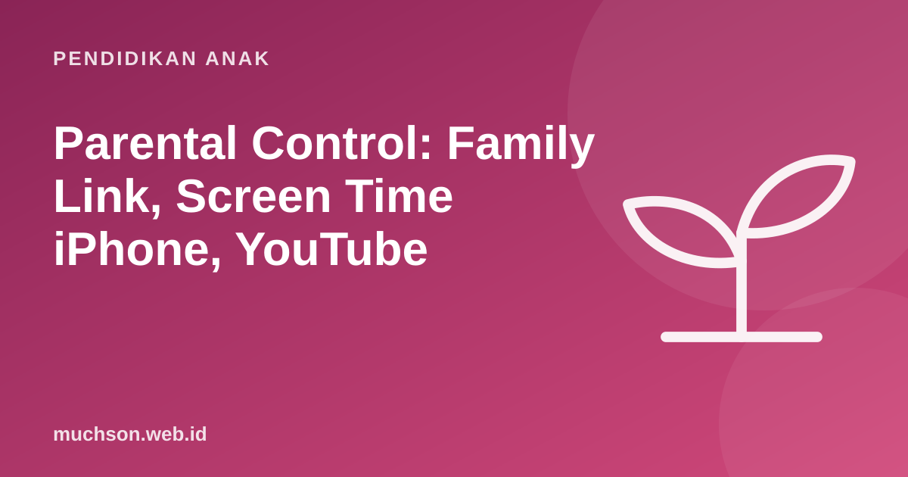

Beranda › Artikel › Pendidikan Anak
Pendidikan AnakParental Control: Family Link, Screen Time iPhone, YouTube
Parental control membantu orang tua mengatur waktu layar, menyaring konten, dan menyetujui aplikasi yang diunduh anak. Fitur ini bukan pengganti pendampingan, tetapi jaring pengaman yang sangat berguna. Berikut cara mengaturnya di perangkat yang paling umum di rumah Indonesia.

Apa yang bisa dan tidak bisa dilakukan parental control
Beri tahu anak bahwa parental control dipasang dan kenapa. Pengawasan diam-diam yang ketahuan merusak kepercayaan, dan anak yang merasa dipercaya lebih mungkin bercerita saat menemui masalah di internet.
Android: Google Family Link
Family Link adalah aplikasi gratis dari Google untuk mengelola akun Google dan perangkat Android anak. Untuk anak di bawah usia minimum akun Google di negaranya, akun anak dibuat dan dikelola orang tua melalui Family Link.
- Pasang aplikasi Google Family Link di ponsel orang tua.
- Buat akun Google untuk anak atau tambahkan akun anak yang sudah ada ke grup keluarga.
- Masuk ke akun anak di ponsel anak, lalu ikuti petunjuk untuk menghubungkan pengawasan.
- Di aplikasi Family Link orang tua, pilih anak, lalu buka Kontrol.
- Atur batas harian dan waktu istirahat (jam tidur perangkat).
- Atur persetujuan aplikasi agar unduhan dari Play Store perlu izin Anda.
- Atur filter konten untuk Chrome dan pencarian Google.
Nama menu bisa berbeda sedikit tergantung versi Android dan aplikasi. Di ponsel anak, pengaturan biasanya ada di Setelan → Digital Wellbeing & kontrol orang tua.
iPhone dan iPad: Screen Time
Di perangkat Apple, pengaturan dilakukan lewat Screen Time (Durasi Layar) dan Family Sharing (Berbagi Keluarga). Jika anak sudah ada di grup Berbagi Keluarga, Anda bisa mengatur Screen Time anak dari perangkat Anda sendiri.
- Siapkan Berbagi Keluarga dan tambahkan akun Apple anak.
- Di perangkat Anda: buka Pengaturan → Keluarga, pilih nama anak, lalu Durasi Layar.
- Atur Waktu Henti (downtime) untuk jam tidur.
- Atur Batas App untuk kategori seperti game dan media sosial.
- Atur Pembatasan Konten & Privasi: rating usia aplikasi, film, dan situs.
- Aktifkan Minta untuk Membeli agar unduhan dan pembelian perlu persetujuan.
- Buat kode sandi Durasi Layar yang berbeda dari kode buka perangkat dan tidak diketahui anak.
Apple menyarankan memperbarui semua perangkat keluarga ke versi perangkat lunak terbaru agar pengaturan tersinkron dengan baik. Apa pun batas yang dipasang, panggilan ke nomor darurat tetap bisa dilakukan.
YouTube
| Pilihan | Untuk siapa | Catatan |
|---|---|---|
| YouTube Kids | Anak usia prasekolah dan SD awal | Aplikasi terpisah dengan konten yang disaring; orang tua bisa memilih tingkat usia dan memblokir video atau saluran |
| Pengalaman diawasi di YouTube | Anak yang lebih besar (praremaja) | Akses YouTube biasa dengan pengaturan konten yang dipilih orang tua lewat akun yang dikelola |
| Mode Terbatas | Perangkat bersama | Menyaring sebagian konten dewasa; tidak sempurna |
Matikan putar otomatis (autoplay) di mana pun tersedia. Fitur ini adalah salah satu penyebab utama anak terus menonton lebih lama dari rencana.
Lapisan tambahan
- SafeSearch Google untuk menyaring hasil pencarian eksplisit.
- Pengaturan router atau DNS keluarga yang menyaring situs untuk semua perangkat di rumah. Beberapa penyedia internet juga menawarkan fitur ini.
- Akun pengguna terpisah di laptop keluarga, dengan anak memakai akun standar, bukan administrator.
- Pengaturan privasi di setiap aplikasi: matikan obrolan dengan orang asing, lokasi, dan profil publik.
Aturan usia akun di Indonesia
Indonesia kini punya Peraturan Pemerintah Nomor 17 Tahun 2025 tentang tata kelola sistem elektronik dalam pelindungan anak, yang dikenal sebagai PP Tunas. Aturan ini mewajibkan platform membatasi akun anak sesuai tingkat risiko layanan, termasuk pembatasan bagi anak di bawah 16 tahun pada platform berisiko tinggi, dan persetujuan orang tua untuk anak yang lebih kecil pada layanan berisiko rendah. Penerapannya bertahap dan setiap platform menyesuaikan dengan caranya masing-masing, jadi parental control di rumah tetap penting.
Daftar periksa
Parental control bekerja paling baik bila dipadukan dengan pilihan aplikasi yang memang aman sejak awal: tanpa iklan, tanpa obrolan publik, dan punya tujuan yang jelas. Itu salah satu prinsip yang saya pegang saat membuat PixelKode.
Tanya jawab
Apakah Google Family Link gratis?
Bagaimana mengatur Screen Time anak di iPhone?
Apakah YouTube Kids aman 100%?
Apakah anak boleh tahu ada parental control?
Sumber dan bacaan lanjut
- Google: Memulai dengan Family Link
- Apple: Use Screen Time to manage your child's iPhone or iPad
- YouTube Kids
- Komdigi: Tunaspedia (PP Tunas)
- CNBC Indonesia: batas usia anak punya akun media sosial